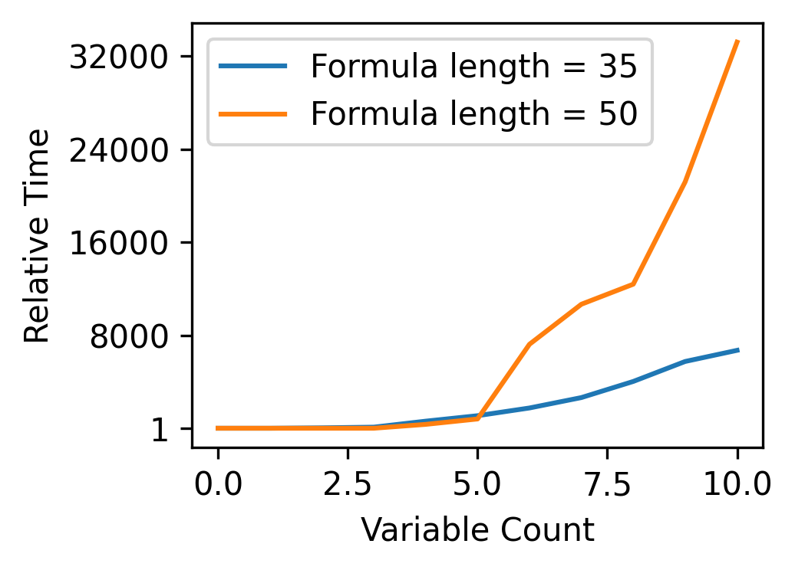
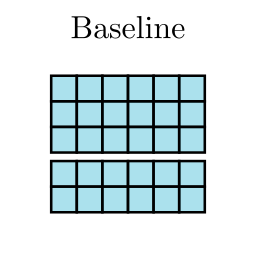
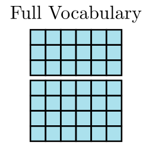
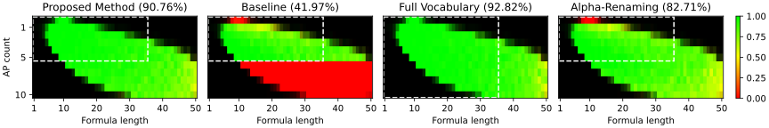
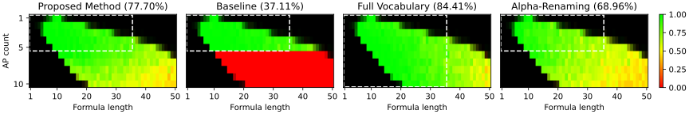

İlker Işık, Ramazan Gokberk Cinbis, Ebru Aydin Gol
ICML 2025
For interchangeable tokens, our embedding matrix combines a common learnable part for weight sharing and a randomly generated part for distinguishability.
We propose a novel approach for learning interchangeable tokens in language models to obtain an extendable vocabulary that can generalize to new tokens. Our method addresses alpha-equivalence, the principle that renaming bound variables preserves semantics. This property arises in many formal languages such as temporal logics, where all proposition symbols represent the same concept but remain distinct. To handle such tokens, we develop a dual-part embedding approach. The first part is shared across all interchangeable tokens, enforcing that they represent the same core concept. The second part is randomly generated for each token, enabling distinguishability. As a baseline, we consider a simpler approach that uses alpha-renaming for data augmentation. We also present alpha-covariance, a metric for measuring robustness against alpha-conversions. When evaluated in a Transformer encoder-decoder model for solving linear temporal logic formulae and copying with extendable vocabulary, our method demonstrates promising generalization capabilities as well as a favorable inductive bias for alpha-equivalence.
In many formal languages, variables can be renamed without changing the meaning. This transformation is called alpha-renaming, and the resulting formulas are alpha-equivalent. Since all variables share the same underlying concept, we aim to train a model that can generalize to larger variable vocabularies.
In many application areas such as linear temporal logic, obtaining data with a larger vocabulary is significantly more expensive. As a result, it is desirable to train a model with an extensible vocabulary that can generalize to unseen tokens during test time. This problem was not investigated previously to the best of our knowledge.

Time required to solve a linear temporal logic formula using classical algorithms.
Since all interchangeable tokens share the same learnable weights in our method, we can easily add new tokens during test time by generating the random parts.
We perform experiments on three problems:
Our method achieves flawless performance on the first task, extrapolating to a vocabulary size of 160 after being trained on only 20 unique characters. It also combines well with positional encoding methods that enable length generalization (e.g., RoPE). Further details are given in the paper.


Embedding matrices of the methods evaluated in experiments. Interchangeable tokens are at the bottom of matrix, separated by a small gap. The full vocabulary baseline requires a different training dataset with extended vocabulary. Note that the alpha-renaming baseline is also introduced by our work, as a more straightforward approach to enforce alpha-equivalence.

(a) LTL Solving

(b) Propositional Logic
Heatmaps visualizing the ratio of correct predictions on a special test set, for LTL solving (top) and propositional logic (bottom) tasks. The brightness of the color depends on the sample size, with full brightness representing 100 samples. The dashed white box represents the boundaries of the training dataset. AP stands for "Atomic Proposition", i.e., variable.